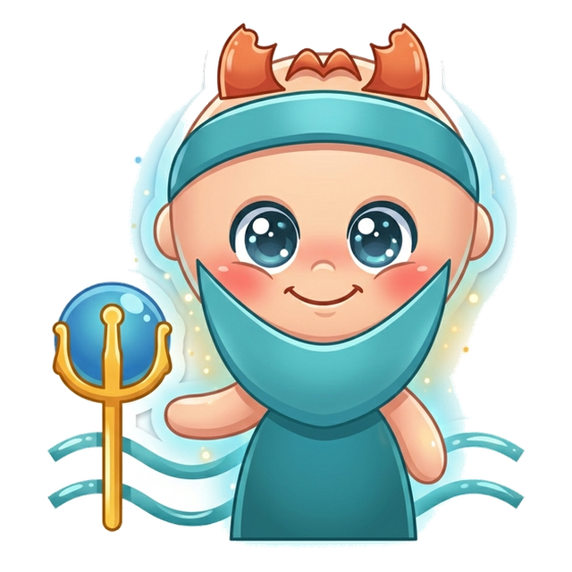
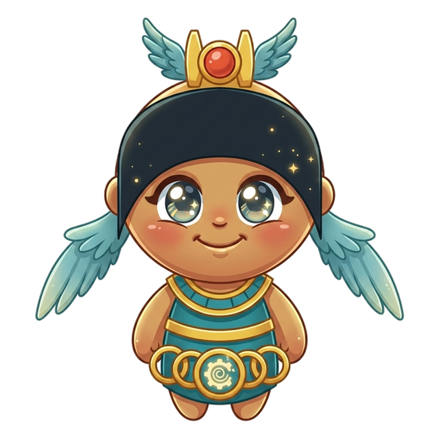

10 chapters181 practice wordsquizzes & puzzles throughout
Bizzy & Star in the Storm of Elements Greek blows in like weather — catch the bolts and the words light up.
Greek LightningHow this book works
Five moves. That's the whole system.
Hi — I'm Star. Greek and number prefixes, endings included — that's where we're going, one chapter at a time. Bring a pencil. I'll bring the words.
1
Read the story
Each chapter opens like a film. Vex sets the trap; your guide walks you out of it.
2
Steal the pro move
The dark box is how a champion thinks on stage. It works on brand-new words too.
3
Spell out loud, then write
Say it, spell it OUT LOUD, then write it in the box. Mouth and hand together beat eyes alone.
4
Pass the checkpoint
A short quiz straight from the Word Map. Circle your answers; the back of the book keeps the truth.
5
Play the puzzle, hunt the Big List
Every chapter ends in a game built from its own words, and the back holds every word in the book. Circle what you own.
🔊 Grown-ups: every chapter is narrated, and every word recorded, in the Bizzing Bee app
Bizzing Bee · Greek Lightning1
Greek LightningThe cast
Bizzy — and this book's guide, Star
The crew of Vol. 4
Nobody spells alone. Meet the crew walking this world with you — they will hand you puzzles, run your checkpoints and cheer from the margins.
Bizzy — The little bee who spells the world back together, one petal at a time. · Star — Born for the spotlight, centre stage always.
Breeze
OVR 62
Rookie of the Elements
A gentle push in the right direction.
Supernova
OVR 74
Champion of the Cosmos
Goes out with the biggest bang in the galaxy.
Zappy
OVR 70
Champion of the Elements
A flash of pure electric excitement.

Poseidon
OVR 86
Champion of the Pantheon Peaks
Moody as the sea and twice as deep.
Leafy
OVR 63
Speller of the Elements
Grows a little greener with every word.
Ember
OVR 68
Speller of the Elements
A tiny spark with a warm heart.
Saturn
OVR 68
Champion of the Cosmos
Calm, ringed and always the coolest in the room.

Isis
OVR 63
Champion of the Pantheon Peaks
The wise Egyptian goddess of magic, healing and protection.
And the other one
Vex the word-moth sneaks through every chapter, planting the exact mistakes real spellers make. Spot the trap before you step in it.
Bizzing Bee · Greek Lightning2
WELCOME TO
The Storm of Elements
Greek blows in like weather — catch the bolts and the words light up.
Bizzing Bee · Greek Lightning3
1Greek Prefixes · the Storm of Elementsanti- / hyper- / hypo- (against / over / under)
BizzyThree Greek prefixes. Anti, spelled A N T I, means against. Hyper, H…
UH-OH!
VexOne spelling trap. Hypocrisy, hypo plus the Greek krinein, to judge, ends I…
BreezeTake antidote. Anti, against, plus the Greek didonai, to give. Something given against…
LeafyHere's a delightful one. Hyperbole, hyper plus the Greek ballein, to throw. Throwing…
🔊 narrated in the appturn the page — the whole trick, explained →
4
Chapter 1 · anti- / hyper- / hypo- (against / over / unde…The idea · ★★☆
The big idea
Greek anti- = against, hyper- = over/excessive, hypo- = under/insufficient. In medicine, knowing the prefix IS knowing the diagnosis. In literature, hyperbole and hypocrisy are built from this same trio.
Antipathy (anti- + pathos) = feeling against = deep dislike. Antithesis = placed against = direct opposite. Antidote (anti- + didonai = give) = given against a poison. Anticlimactic = again…
Five Greek prefixes of size and distance — from "self" to "far," from "tiny" to "enormous." These appear in science, technology, and everyday vocabulary. Learning them unlocks everything from microscope to megalomania.
Telepathy (tele- + pathos) = feeling from far away. Teleology (tele- + logos) = study of purposes/ends. Telekinesis (tele- + kinesis = movement) = moving things from a distance. Telegraph =…
Vex alert
AutoNOMy = self-law — NOM not NAM, think of NORMS you set for yourself.
Check yourself
Cover the page. Spell these three out loud: automaton · autophagy · autodidact. Say each letter like you mean it.
Poseidon · Champion of the Pantheon Peaks runs the checkpoint
Do you own the idea?
Circle your answer, then check the back. No pressure — wrong answers are how the right ones stick. Poseidon's power is Tidal Surge — commands every sea — borrow it.
1. Which of these is the big idea of “auto- / tele- / micro- / macro- / mega-”?
AThe classic rhyme: "i before e, except after c, or when sounding like /ay/ as in ne…
BFive Greek prefixes of size and distance — from "self" to "far," from "tiny" to "en…
CLatin ex- = out of.
DHomophones are words that sound identical but are spelled differently and mean diff…
2. Which word belongs to this chapter's family?
Aautomaton
Bdiaphanous
Cimpeccable
Dchocolate
3. The card “auto- = Self” says…
AMicrocosm (mikros = small + kosmos) = small world. Macrocosm = the large or entire …
Five Greek scientific prefixes — life, earth, light, water, heat — forming the backbone of natural science vocabulary. Every science class uses them; every spelling bee tests them. All require ph not f.
The pro move
PHOTOSYNTHESIS
Say it. f-oh-t-oh-s-IH-n-th-uh-s-ih-s
Spell it. P · H · O · T · O · S · Y · N · T · H · E · S · I · S
Say it again. f-oh-t-oh-s-IH-n-th-uh-s-ih-s
Syllables. p · h · o · t · o · s · y · n · t · h · e · s · i · s
Biology = study of life. Biome = a life community. Biopsy (bio- + opsis = seeing) = visual examination of living tissue. Symbiosis (sym- + bio-) = living together mutually. Antibiotic (anti…
geo- = Earth
Geography = writing about the earth. Geology = study of earth. Geothermal = earth-heat. Geodesic (geo- + daiein = divide) = shortest path on a sphere. Geocentric = earth-centered view. Apog…
Vex alert
BIO + LOGY — every -logy word studies something; this one studies life (bio). Don't…
Check yourself
Cover the page. Spell these three out loud: biology · biome · biopsy. Say each letter like you mean it.
Six Greek body-system prefixes that unlock all medical specialist names and condition vocabulary. Know these six and the science section of any spelling bee becomes a pattern-matching exercise.
Neurology = study of the nervous system. Neuropathy = nerve disease. Neuroticism = anxiety-prone personality trait. Neurosis = a mild mental disorder. Neurotransmitter = chemical messenger …
cardio- = Heart
Cardiology = study of the heart. Cardiovascular = heart and blood vessels. Electrocardiogram = E-L-E-C-T-R-O-C-A-R-D-I-O-G-R-A-M = record of heart electricity (EKG). Myocardium (myo- = musc…
Vex alert
PSYCHOlogy — the PSYCHO at the start is the mind gone wild; don't forget the silent…
Check yourself
Cover the page. Spell these three out loud: neurology · neuropathy · neuroticism. Say each letter like you mean it.
Five Greek positional prefixes describing relationships between things — appearing in philosophy, science, grammar, medicine, and championship spelling bees. Each has a precise spatial or relational meaning.
The pro move
METAMORPHOSIS
Say it. meh-tuh-MAW-rfuh-suhs
Spell it. M · E · T · A · M · O · R · P · H · O · S · I · S
Metamorphosis = change of form beyond what came before. Metaphor (meta- + pherein = carry) = carrying meaning beyond the literal. Metabolism (meta- + ballein = throw) = chemical throwing-ar…
para- = Beside / Beyond
Parable (para- + ballein = throw beside) = a story placed alongside the point = allegory. Paralysis (para- + lysis = loosening beside function) = inability to move. Paraphernalia = things b…
Vex alert
metaMORPHosis: the caterpillar MORPHs through a process (-osis), not an 'a'.
Sound trap
symbol sounds like cymbal — at the mic, always ask for the meaning.
Check yourself
Cover the page. Spell these three out loud: metamorphosis · metaphor · metabolism. Say each letter like you mean it.
6Number Prefixes · the VibeNumber Prefixes 1–10: Latin & Greek
BizzyEnglish borrows its number prefixes from both Latin and Greek. Learn both sets,…
UH-OH!
VexWatch out for millennium. It is mille, a thousand, plus annum, year. That…
GOT IT!
EmberThree is the same in both languages, tri. Take triptych, spelled T R…
BreezeFor one, Latin gives us uni, spelled U N I, as in unicorn,…
🔊 narrated in the appturn the page — the whole trick, explained →
35
Chapter 6 · Number Prefixes 1–10: Latin & GreekThe idea · ★☆☆
The big idea
English borrows number prefixes from both Latin and Greek. Knowing both sets doubles your ability to decode scientific, mathematical, and historical vocabulary at sight.
The pro move
QUINTET
Say it. kwih-NTEHT
Spell it. Q · U · I · N · T · E · T
Say it again. kwih-NTEHT
Syllables. kwih · nteh · t
Sounds → Letters. [kwin=QUIN] [TET=TET]
One and Two
Latin uni- / Greek mono-: unicorn, universe, uniform vs monologue, monopoly, monocle. Latin bi-/du- / Greek di-: bicycle, bilingual vs dialogue, dichotomy, dilemma. Learning both systems me…
Three and Four
Tri- is the same in both Latin and Greek! trilogy, triangle, trinity AND triptych (tri- + ptychē = fold = three-paneled artwork). Latin quad-/quart- / Greek tetra-: quadrant, quartet vs tet…
Vex alert
A BICYCLE has TWO (bi-) CYCLES — two wheels going round and round, spelled with a Y…
Check yourself
Cover the page. Spell these three out loud: unicorn · monologue · bicycle. Say each letter like you mean it.
Bizzing Bee · Greek Lightning36
Chapter 6 · Number Prefixes 1–10: Latin & GreekPractice · ★☆☆
Say it. Spell it out loud. Write it.
🔊 every word has real audio in the app
unicorn
/ YOO-nih-kawrn / · /ˈjunɪkɔrn/
an imaginary creature represented as a white horse with a long horn growi…
hook: A UNICORNer has UNI (one) CORN-shaped horn — no 'k', it's Latin fancy.
The little girl drew a glittery ▁▁▁ with a silver horn on her birthday card.
monologue
/ MAH-nuh-lawg / · /ˈmɑnəlɔɡ/
speech you make to yourself
hook: A MONOlogue is ONE person's LOGUE (speech) — one mouth, lots of words…
The actor delivered a powerful ▁▁▁ that left the entire audience holding its …
bicycle
/ BEYE-sih-kuhl / · /ˈbaɪsɪkəl/
a wheeled vehicle that has two wheels and is moved by foot pedals
hook: A BICYCLE has TWO (bi-) CYCLES — two wheels going round and round, sp…
He rode his ▁▁▁ to school every morning, weaving through the quiet neighborhood…
dialogue
/ d-AY-uh-l-aw-g / · /dˈeɪəlɔɡ/
is conversation with two or more people
hook: A dialogUE always ends politely with a silent UE — the quiet goodbye …
he has read Plato's ▁▁▁ in the original Greek
dichotomy
/ d-ay-k-AH-t-uh-m-ee / · /deɪkˈɑtəmi/
is division into two parts
hook: DICHOTOMY cuts things in two — spot the CH and remember 'cut in two h…
the ▁▁▁ between eastern and western culture
trilogy
/ TRIH-luh-jee / · /ˈtrɪlədʒi/
a set of three literary or dramatic works related in subject or theme
hook: A TRILOGY tells THREE stories—tri+LOGY like biology and geology, ends…
She stayed up all weekend to finish the final book of the fantasy ▁▁▁ she had b…
Bizzing Bee · Greek Lightning37
Chapter 6 · Number Prefixes 1–10: Latin & GreekRapid round · ★☆☆
More ammo — one line each.
triptych/TRIH-ptihk/ art consisting of a painting or carving (especi…
quadrant/KWAH-druhnt/ a quarter of the circumference of a circle
tetrahedron/teh-truh-HEE-druhn/ any polyhedron having four plane faces
pentagon/PEH-ntih-gahn/ a government building with five sides that serv…
quintessence/k-w-ih-n-t-EH-s-uh-n-s/ is the pure and concentrated essence of a subst…
hexagon/HEH-ksuh-gahn/ a six-sided polygon
septuagenarian/s-eh-p-ch-oo-uh-j-uh-n-EH-r-ee-uh-n/ is between 70 and 80 years of age
octave/AH-ktihv/ a feast day and the seven days following it
decathlon/dee-KA-thlawn/ an athletic contest consisting of ten different…
millennium/m-uh-l-EH-n-ee-uh-m/ is a period of 1000 years
centimeter/SEH-ntuh-mee-ter/ a metric unit of length equal to one hundredth …
nonagenarian
Lock them in
Pick 4 words from above. Say each one as you write it — three times, no shortcuts. The third copy is the one your hand remembers.
Bizzing Bee · Greek Lightning38
Chapter 6 · Number Prefixes 1–10: Latin & GreekCheckpoint · ★☆☆
Isis · Champion of the Pantheon Peaks runs the checkpoint
Do you own the idea?
Circle your answer, then check the back. No pressure — wrong answers are how the right ones stick. Isis's power is Endless Engine — borrow it.
1. Which of these is the big idea of “Number Prefixes 1–10: Latin & Greek”?
AThe classic rhyme: "i before e, except after c, or when sounding like /ay/ as in ne…
BHomophones are words that sound identical but are spelled differently and mean diff…
CLatin ex- = out of.
DEnglish borrows number prefixes from both Latin and Greek.
2. Which word belongs to this chapter's family?
Achocolate
Bdiaphanous
Cimpeccable
Dunicorn
3. The card “One and Two” says…
ATri- is the same in both Latin and Greek! trilogy, triangle, trinity AND triptych (…
Greek poly- = many, Latin multi- = many, Latin omni- = all, Greek pan- = all. Four ways to say "many/all" — each with its own vocabulary territory and spelling patterns.
The pro move
OMNISCIENT
Say it. ah-MNIH-shuhnt
Spell it. O · M · N · I · S · C · I · E · N · T
Say it again. ah-MNIH-shuhnt
Syllables. om · ni · scient
Sounds → Letters. [om=OM] [NISH=NI] [ent=SCIENT]
poly- = Many (Greek)
Polygon (poly- + gon = angle) = many-angled figure. Polyglot (poly- + glotta = tongue) = speaks many languages. Polyphony = many voices. Polymath (poly- + manthanein = learn) = one who know…
multi- = Many (Latin)
Multilingual = many languages (Latin parallel of polyglot). Multifaceted = many faces/aspects. Multitudinous = very great in number. Multifarious (multi- + fari = speak) = of many different…
Vex alert
OMNIPOTENT ends in '-ent' — all-powerful beings are competENT, not competANT.
Check yourself
Cover the page. Spell these three out loud: omniscient · omnipotent · omnivore. Say each letter like you mean it.
Greek -ismos = doctrine or practice; -istes = practitioner. Every -ism is a belief system or practice; every -ist is the person who holds or practices it. The pair is always structurally parallel.
-ism = the belief/practice itself. -ist = the person. Nihilism (nihil = nothing) = belief nothing has meaning; nihilist = one who holds this. Narcissism = excessive self-admiration; narciss…
-ism in Religion & Philosophy
Monotheism (mono- + theos) = one god. Polytheism = many gods. Atheism (a- + theos) = no god. Agnosticism = uncertain about gods. Stoicism = philosophy of endurance. Sophism = clever but mis…
Vex alert
NIHILism — NIHIL means NOTHING in Latin; nihilism = the belief in nothing
Check yourself
Cover the page. Spell these three out loud: nihilism · narcissism · ostracism. Say each letter like you mean it.
Greek logos = word/reason/study. The -ology suffix = the study of. One of the most productive patterns in English — know the root, know the field, know the specialist name.
The pro move
OPHTHALMOLOGY
Say it. ah-p-th-uh-m-AH-l-uh-j-ee
Spell it. O · P · H · T · H · A · L · M · O · L · O · G · Y
Say it again. ah-p-th-uh-m-AH-l-uh-j-ee
Syllables. o · p · h · t · h · a · l · m · o · l · o · g · y
Root + -ology = study of that root. Biology = study of life. Geology = earth. Vexillology (vexillum = flag) = flags. Campanology (campana = bell) = bells. Dendrochronology (dendro = tree + …
The -ologist Specialist
Add -ist after the -olog-: seismologist (seismos = earthquake). Graphologist = handwriting. Gerontologist (geron = old man) = aging. Ornithologist (ornis = bird) = birds. Entomologist (ento…
Vex alert
EPISTEMOLOGY: the STUDY (-logy) of what SEEMS (-steme) to be KNOWN — don't drop the…
Check yourself
Cover the page. Spell these three out loud: ophthalmology · seismology · graphology. Say each letter like you mean it.
“It is not the mountain we conquer, but ourselves.”
— Edmund Hillary, First to climb Mount Everest
Bizzing Bee · Greek Lightning58
10Greek Medical Suffixes · the MeadowMedical Suffixes: -itis / -osis / -ectomy / -plasty /…
BizzySix Greek suffixes can decode almost any medical word, even one you have…
GOT IT!
StarHere is the key contrast. The ending e c t o m y…
BreezeThe ending i t i s always means inflammation. Gingivitis is inflammation of…
LeafyBut plain t o m y just means cutting into, not removing. Dichotomy…
🔊 narrated in the appturn the page — the whole trick, explained →
59
Chapter 10 · Medical Suffixes: -itis / -osis / -ectomy / -…The idea · ★★☆
The big idea
Six Greek medical suffixes that together explain the structure of nearly every medical and surgical term. Know these six patterns and you can decode medical vocabulary on sight — even words you have never seen before.
The pro move
APPENDECTOMY
Say it. a-pih-NDEH-ktuh-mee
Spell it. A · P · P · E · N · D · E · C · T · O · M · Y
Star says: you just finished a whole book. That happened.
DONE
★
+1
Every word in here also lives in the Bizzing Bee app, with real audio, games and a coach that remembers what you miss. Paper for the muscles, app for the ears.
Bizzing Bee is an independent study project — not affiliated with, sponsored by, or endorsed by the Scripps National Spelling Bee, the North South Foundation, or Merriam-Webster. Competition names appear only to describe what the practice material relates to. Definitions, sentences, hints and stories are written for this project. Typefaces are open-licensed (SIL OFL).